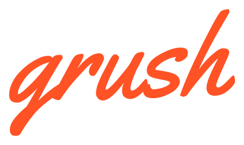

Grush
One overlay. Every business it runs.
Grush turns a site a business already has into a working management system — without the site depending on it. Two deployments are live.
Lancer Farms & Gardens
California Baptist University · student-run growing operation
lancerfarms.com
↗
Desert Fog Mycology
Container mushroom farm · Riverside, CA
funguyfungi.org
↗
The next deployment
Every Grush build starts from the same six-table core. The tool that generates one is still being designed.
See progress
↗